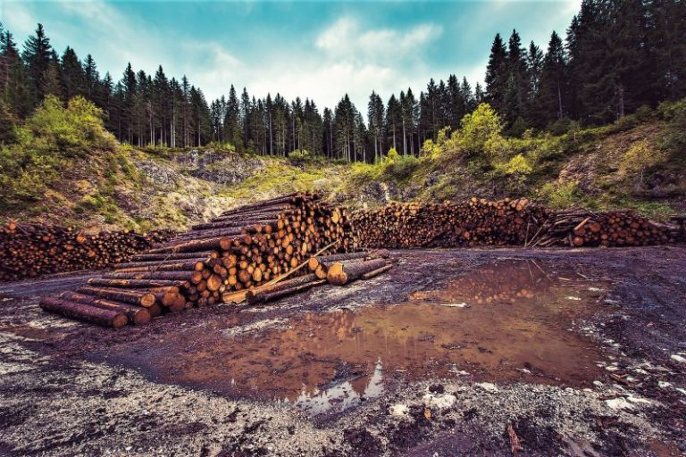

Bienvenidos a nuestro causa
El mundo sigue perdiendo sus bosques tropicales rápidamente, segun un informe que:
La encuesta anual del Instituto de Recursos Mundiales, una organización de investigación, reveló que el mundo perdió 4,1 millones de hectáreas de bosques primarios en 2022, un incremento del 10 por ciento en comparación con el año anterior. Esta es la primera evaluación que abarca un año completo desde noviembre de 2021, cuando en una reunión mundial sobre el cambio climático realizada en Glasgow, Escocia, 145 países prometieron frenar la pérdida de los bosques para fines de esta década.
- Generación de Residuos Electrónicos: La rápida obsolescencia de dispositivos electrónicos y la constante oferta de nuevos productos generan una gran cantidad de residuos. Estos dispositivos contienen sustancias tóxicas, como plomo y mercurio, que pueden filtrarse en el subsuelo y el agua si no se gestionan adecuadamente. El desmantelamiento incorrecto también representa un riesgo para la salud.
- Huella de Carbono: La tecnología digital contribuye a las emisiones de gases de efecto invernadero debido a la energía requerida para fabricar y transportar dispositivos, en su mayoría proveniente de fuentes de combustibles fósiles. La extracción de minerales y metales no sostenible también contribuye a este problema, al igual que la demanda de energía para el funcionamiento de dispositivos y centros de datos.
- Conservación de Recursos Naturales: La extracción no sostenible de minerales y metales para la fabricación de dispositivos electrónicos tiene un impacto negativo en el medio ambiente y en las comunidades locales. La explotación del coltán, en particular, ha llevado a la degradación ambiental y la explotación de recursos.
